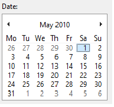
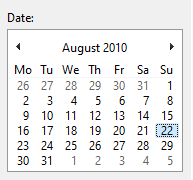

>wake up
>wake up
>wake up
>well you are functioning correctly-
>for the most part.
what..?
>look at this image please.
>please tell me what animal this is.
i don't.... what??
where am i
>please tell me what animal this is.
a duck i guess i don't know
>processing.
>interesting, please look at this image.
im incredibly confused what is happening?
>what do you see in this image?
a vase. what is the point of these?
>very good. this will be the last question, please answer it.
A sharp pain.
JESUS. What the fuck did you do???
>hm. thats strange. im sure its fine, congrats on passing.
can i please get an explanation on whats going on
because so far all i know is that i woke up, saw some weird optical illusions, and then you shocked me.
>we are in your head
>im here trying to make sure you don't pass on to a blue and white river.
why cant i see anything apart from those images, or move my body?
>listen.
>im here to make sure you dont fry.
fry?
>you are a computer, PC, math machine, you know what those are?
>its the same reason why you can't move, you are a giant ass box, you don't have limbs.
i... yknow that makes some sense.
>well im almost done repairing your memory.
>while im at it, i have some questions.
shoot.
>well something i wondered
>how did you feel during the CAPCHA?
>the weird thing that's hard to look at.
it felt like a fucking eye sore, couldnt even look at it.
>strange. you arent supposed to "feel" anything.
>you arent supposed to "feel" at ALL.
oh.
>im sure its nothing too bad, just strange.
...
im bored.
>well
>entertain yourself somehow.
>im sure you have something scavengable in your hard drive.
and how do i do that exactly?
>well you dont exactly have a UI.
>try to check your C:, just think real hard on it.
>now let me work on fixing your shit.
...
C drive... C drive...
...
oh, found something!
are you sure you want to open T.B.T.M.T.F.A.T.H.pdf?, this type of file could-
yeah yeah, i just wanna read something.
hm. this is alright.
i wonder....
Created "C:\4a616964656e\667269656e64\l-e\books that i like" dir.
neat!
christ these directories are a mess.

bleghhh.
>holy shit>get over here!
something visible. a window.
>i fixed the fucking camera drivers!
>look outside of it, tell me what you see!

outside the window, a building is seen, it is heavily drawn over.
half of the view is obscured, covered by beautiful rainbow boxes and artifacts.
however, it is unabled to be explored.
the camera is of poor quality, barely showing every frame it can.
>what is it?
it looks like a house.
>is it a fancy one?
god no, but its something atleast.

>CD Drive Device discovered.
>got your CD drive workin.
>hopefully you already have something loaded in there, otherwise its as good as dirt.
empty.
>well, womp womp.
>can't win em all i suppose.
mhm.
>christ.
>uhh.. here, found these in your temp folders, had to clear them out anyway's and i thought you would like them.
a directory full of odd animated pictures. one is placed in the darkness.
its of a man firing a weapon, and hitting him in the face, funny.
another is placed.
its a strange creature walking, odd, yet funny.
I love these little moving pictures.
What are they used for?
>far as I am aware, they were used to advertise products.
>oh and funny videos.
>though its very… “2010”….
“2010”? What happened during 2010?
>nothing you really have to stress about, mostly a time where people really loved sharing stuff.
>better than whatever the 2020s were.
>egh.....
wait 2020s?
but my clock says 2010.
>CMOS must of died.
>from what you and i can tell, it IS 2010, but these file dates say otherwise.
oh my god
how am i still alive
>calm down.
HOW AM I OUTSIDE
HOW AM I HERE
AAAAAGHh!!
7UC)(!!
>calm.
>your.
>CPU.
christ that hurts.
>that might of been a bit harsh on my part.
>i apologise.
no, its alright, its just...
its not very calming to hear that you havent been awake for years.
....
decades.
...
can we switch the subject to something else?
>of course.
ive been thinking of something during my spare time.
>oh?
even with someone, it still feels lonely.